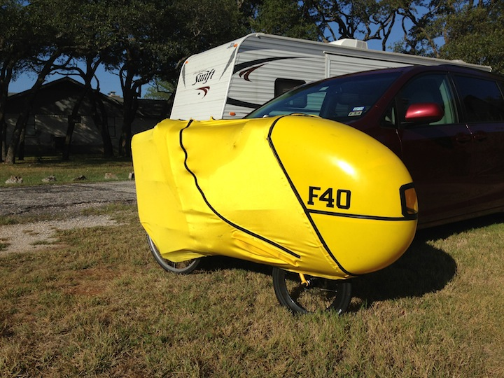

F-40 Fast ride! Strava KOM 5.2 miles @ 26.6 mph
07 Sep 2013
F-40 is wicked fast!
The ride this morning was 30 miles @ 21.6 mph and a Strava KOM on a 5.2 mile segment of 26.6 mph.
Last night I put the fairing back on the F-40 and was ready to roll a little before 8am this morning.

I have lightened the F-40 up since riding the last time. Replaced the AeroSpoke front wheel with a deep-v carbon rim clincher (minus a pound at least). Replaced the stainless steel growler with a 100 oz camelbak unbottle (minus a pound at least). Took a few pounds off the engine.
I also have become very comfortable with the speed so I replaced the Marathon Plus tires with Schwable Kojak tires. The Kojak’s are 35 mm and great for Texas chip-seal. They also have pretty low rolling resistance and I’ve found them much faster than the Marathon Pluses.
I felt really good at the beginning of the ride. I had noticed that Justin (the young triathlete in my neighborhood I can never catch) rode by my driveway about 10 minutes before I started my ride. I briefly thought about trying to catch him but quickly dismissed the thought.
About 2 miles into the ride I’m noticing that the Kojaks are making a huge difference and I decide to go for a fast 30 mile ride to see how the bike is doing with all the changes. Remember, I had not ridden the F-40 since getting the heat treatment at Hotter ‘N Hell Hundred.
This morning it was a nice cool 72 degrees and I was wearing my lightweight running clothes. After the two mile mark I was loosened up enough that I took my heart rate up to 140 and tried to keep it there. This resulted in some pretty decent speeds on the F-40.
http://connect.garmin.com/modern/activity/371893825
About the 8.5 mile mark I caught a large group of riders that I think were the Georgetown Triathlon team because Kat and Justin were at the front of the group. I had just finished coming down the large hill at Williams and CR245 and was carrying some decent speed so I think I passed the group doing around 30 mph. Kat and Justin recognized me but I was going too fast have any kind of conversation going on.
I was getting close to the start of a Strava KOM that I’m second place. The first place guy was only ahead of me by 3 seconds. Since I was feeling so good and the bike was riding really well I thought I’d go all out to see if I could make up the 3 seconds.
I kept my heart rate above 150, kept the legs really loose and spinning. No hint of cramps, definitely out of breath but not gasping. Boom! Eleven and a half minutes later the KOM is mine. Crushed it - 5.2 miles at 26.6 mph.
http://app.strava.com/activities/80705405#1642303890
While going for the KOM I passed lots of uprights. Lots of uprights! It was early Saturday morning and everybody was out. Many of the young fit guys on really nice time trial bikes would see me coming and speed up to try and keep in front of me. That was not happening today. I blew by many of them doing 35 to 37 mph. A lot of them yelled out some kind of encouraging phrase: "Yow!", "Ka-Boom!", "Get after it!"
After the turn around point (15 miles) I slowed down and headed back home. Interesting enough Kat and Justin had actually tried to keep up with me. They had passed all of the other very fit riders behind me and were only about 1 and a half miles behind me. That is impressive.
Well looks like the F-40 is a keeper.